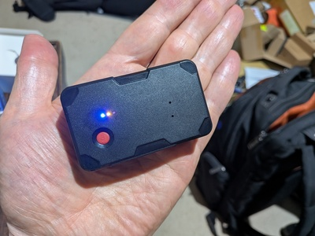

The GT06 is a small, low-power GPS tracker that connects to the Windsurfer Tracker server via the GT06 binary protocol over TCP. It provides position reports, battery monitoring, and an SOS button. GT06 devices are useful for tracking boats or vehicles that don't have a phone.
GT06 devices are configured by sending SMS commands to the SIM card phone number in the device. You need to set the APN for your SIM card and point the device at the server.
Insert an activated SIM card with mobile data into the GT06 device. Power it on and wait for the LED indicators to show it has registered on the network.
Point the device at the Windsurfer Tracker server. The SMS command varies by device — check your device's manual. For the W07C (and many similar devices):
Other devices may use a different format, for example:
Many devices will connect without explicitly setting the APN, but setting it can help with working on a wider range of networks. Note that if the device hasn't made an initial data connection, it may not be able to receive SMS — so try the server address step first and only set the APN if the device doesn't connect.
For the W07C with a Hologram SIM:
Other devices may use a different format, for example:
Check your device's manual for the correct APN command. Replace hologram
with your carrier's APN name if using a different SIM provider.
Once the device connects, you should see it appear in the server log:
The device will appear on the tracking map with a GT06-assigned ID (e.g. G226122).
Use the admin panel to set a display name.
| Command | Description |
|---|---|
VERSION# | Get firmware version and build date |
PARAM# | Show all current parameters (IMEI, timer, HBT, etc.) |
802#apn# | Set APN (see above) |
803#ip#port# | Set server address |
TIMER,n,n# | Set GPS reporting interval (seconds) |
HBT,n,n# | Set heartbeat interval (seconds) |
CIP# | Query current server address |
GT06 support must be enabled on the server by setting a TCP port. Add these to your
settings.json:
| Setting | Default | Description |
|---|---|---|
gt06_port | disabled | TCP port for GT06 connections (required to enable) |
gt06_interval | 10 | GPS reporting interval in seconds when active |
gt06_id_prefix | G | Prefix for GT06 tracker IDs (e.g. G226122) |
gt06_config | gt06.json | Device config file for IMEI-to-event mapping |
gt06_log | gt06.log | Binary packet log file for debugging |
To assign GT06 devices to specific events and set display names, create a gt06.json
file in the server directory:
| Field | Description |
|---|---|
default_eid | Event ID for devices not listed in devices |
devices | Map of IMEI to device config |
devices.*.eid | Event ID to assign this device to |
devices.*.name | Display name (set automatically on connect) |
GT06 devices default to idle mode when they connect. In idle mode the device sends heartbeats every 15 seconds (for battery and signal monitoring) but only reports GPS position every 60 seconds to conserve battery.
Admins can control idle/active state from the Web UI:
Check that:
802#apn#)803#ip#port# then CIP# to verify)gt06_port configuredThe GT06 reports speed as an integer in km/h, which truncates to zero at walking pace. The server automatically smooths zero-speed values using position derivatives over a 3-second window.
GT06 devices default to idle mode on connect. Check the server log for a successful login message. If the device shows as idle (stopped), use the admin panel to start it.